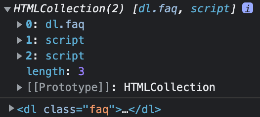
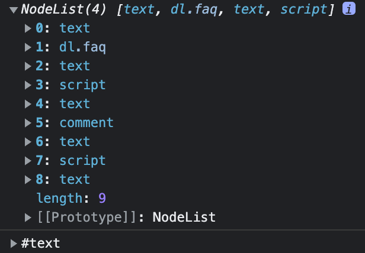

1. はじめに
1-1. 前回の課題
1-2. 今後のスケジュール
- 1/9(木)：要素の関係性・追加・削除
- 1/16（木）：オブジェクト
- 1/23(木)：補足
- 1/30（木）：2年前期クラス分け確認テスト
document.getElementsByTagName('要素名');
document.getElementById('id名');
document.getElementsByClassName('class名');
document.querySelector('セレクタ');
document.querySelectorAll('セレクタ');<!DOCTYPE html>
<html lang="ja">
<head>
<meta charset="UTF-8">
<meta name="viewport" content="width=device-width, initial-scale=1.0">
<title>要素の取得</title>
<style>
</style>
</head>
<body>
<!-- コメント -->
<h1>見出し1</h1>
<p>これは段落です。</p>
<script>
const p = document.querySelectorAll('p');
console.log(p);
//出力結果：NodeList
</script>
</body>
</html>この後、要素の操作方法についてより詳しく勉強していくが、その前に「Node（ノード）」の意味と、前提となる「DOM（ドキュメントオブジェクトモデル）」についてある程度理解する必要がある。
| プロパティ | 戻り値のタイプ | 説明 |
|---|---|---|
| parentElement | Element | 親の要素を返す |
| parentNode | Node | 親のノードを返す |
| children | HTMLCollection | 子要素を含む配列風オブジェクトを返す |
| childNodes | NodeList | 子ノードを含む配列風オブジェクトを返す |
| firstElementChild | Element | childrenで取得される配列風オブジェクトの最初の要素を返す |
| firstChild | Node | childNodesで取得される配列風オブジェクトの最初のノードを返す |
| lastElementChild | Element | childrenで取得される配列風オブジェクトの最後の要素を返す |
| lastChild | Node | childNodesで取得される配列風オブジェクトの最後のノードを返す |
| previousElementSibling | Element | 自要素と兄弟関係にある（隣接する）1つ前の要素を返す |
| previousSibling | Node | 自要素と兄弟関係にある（隣接する）1つ前のノードを返す |
| nextElementSibling | Element | 自要素と兄弟関係にある（隣接する）1つ後の要素を返す |
| nextSibling | Node | 自要素と兄弟関係にある（隣接する）1つ後のノードを返す |
| メソッド | 戻り値のタイプ | 説明 |
|---|---|---|
| element.closest(selector) | Element | 自要素（element）の祖先要素をさかのぼって検索したときに、最初にセレクタ文字列（selector）に一致する要素を返す |
<script>
const elements = document.body.children;
console.log(elements);
console.log(elements[0]);
</script>
<script>
const nodes = document.body.childNodes;
console.log(nodes);
console.log(nodes[0]);
</script>
※「text」は改行。
アコーディオンメニュー（見本）
<!DOCTYPE html>
<html lang="ja">
<head>
<meta charset="UTF-8">
<meta name="viewport" content="width=device-width, initial-scale=1.0">
<title>アコーディオンメニュー</title>
<style>
body {
margin: 0;
}
.faq {
max-width: 800px;
margin: 3em auto;
}
.faq__q {
padding: 0.5em 1em;
background-color: #39c;
cursor: pointer;
}
.faq__a {
margin-left: 0;
padding: 0 1em;
}
</style>
</head>
<body>
<dl class="faq">
<div class="faq__item">
<dt class="faq__q">2022年11月分の料金はいつ引き落としされますか？</dt>
<dd class="faq__a">お客さまの締め日によって異なり、毎月6日、16日、26日の引き落とし日に分かれます。</dd>
</div>
<div class="faq__item">
<dt class="faq__q">前月分の料金が確定するのはいつですか？</dt>
<dd class="faq__a">お客さまの締め日から10日後が料金確定日の目安です。</dd>
</div>
<div class="faq__item">
<dt class="faq__q">請求書が届きました。「PayPay」で支払うことはできますか？</dt>
<dd class="faq__a">「PayPay」でお支払いできます。</dd>
</div>
</dl>
<script>
</script>
</body>
</html><script>
let active = 0;
const q = document.querySelectorAll('.faq__q');
for (let i = 0; i < q.length; i++) {
q[i].addEventListener('click', (e) => {
q[active].parentElement.classList.remove('active');
active = i;
q[active].parentElement.classList.add('active');
});
}
</script><style>
.faq__a {
height: 0;
margin-left: 0;
padding: 0 1em;
overflow: hidden;
}
.active .faq__a {
height: auto;
padding: 0.5em 1em;
}
</style><script>
let active = 0;
const q = document.querySelectorAll('.faq__q');
for (let i = 0; i < q.length; i++) {
q[i].addEventListener('click', (e) => {
q[active].nextElementSibling.classList.remove('active');
active = i;
q[active].nextElementSibling.classList.add('active');
});
}
</script><style>
.faq__a {
height: 0;
margin-left: 0;
padding: 0 1em;
overflow: hidden;
}
/* 複数クラス */
.faq__a.active {
height: auto;
padding: 0.5em 1em;
}
</style><script>
const ul = document.createElement('ul');
ul.classList.add('sample');
ul.innerHTML = `サンプル`;
console.log(ul);
</script>| メソッド | 説明 | 挿入場所 |
|---|---|---|
| element.append | 要素内の最後の子要素としてノードを挿入する |
|
| element.prepend | 要素内の最初の子要素としてノードを挿入する |
|
| element.before | 要素の直前の要素としてノードを挿入する |
|
| element.after | 要素の直後の要素としてノードを挿入する |
|
※その他にも、insertBefore()、insertAdjacentElement()など、複数存在する。
<!DOCTYPE html>
<html lang="ja">
<head>
<meta charset="UTF-8">
<meta name="viewport" content="width=device-width, initial-scale=1.0">
<title>ランダムな数字を生成</title>
</head>
<body>
<button id="btn">生成</button>
<script>
</script>
</body>
</html><script>
/* 配列に画像URLを入れておく */
const url = [
"https://dotown.maeda-design-room.net/wp-content/uploads/2022/01/thing_hippo_02.png",
"https://dotown.maeda-design-room.net/wp-content/uploads/2022/01/thing_mantis_01.png",
"https://dotown.maeda-design-room.net/wp-content/uploads/2022/01/thing_gorilla_01.png",
"https://dotown.maeda-design-room.net/wp-content/uploads/2022/01/thing_gorilla_01.png"
];
</script><script>
btn.addEventListener('click', () => {
const li = `<li>${Math.floor(Math.random() * 100)}</li>`;
ul.innerHTML = li;
});
</script><script>
/* innerHTML：HTMLタグが解釈される */
li.innerHTML = `トライ<br>デント`;
/* textContent：HTMLタグが文字列として扱われる */
li.textContent = `トライ<br>デント`;
</script>